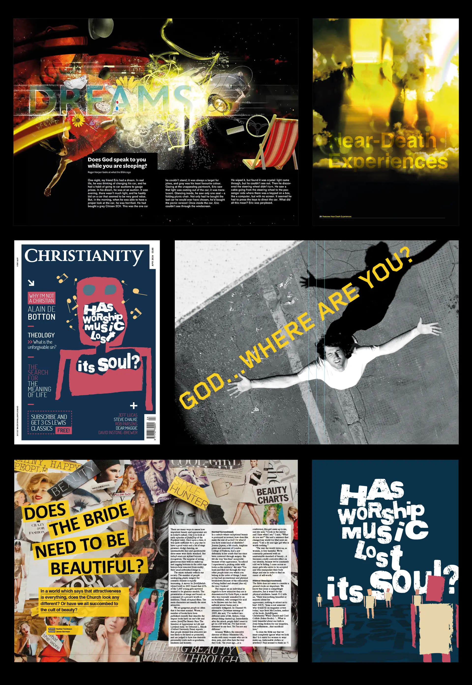

The Christian faith has its history entwined with time itself and it's meaning and relevance are no less pertinent today, than at the birth of time. With this founding thought in mind, I approached the reimagining of Christianity Magazine's brand and editorial design.
Shown here is an artworked concept I created for an article in the magazine called, 'Is your stuff killing your soul?', I took the idea literally and thought, let's have someone vomiting up their possessions and... instead of vomit, let's have stars pouring out as a reference to the cosmic significance.
The Christianity Magazine logo is a good blend of contemporary, classic styling with a smidge of personality. It has been in use now for 10 years.

A few examples of magazine spreads and cover ideas produced for Christianity Magazine.
“James Garnham is a hugely talented art director and a brilliant verbal and visual communicator. He combines creative vision with a real ability to listen to what is needed, he is affable, honest and has a humorous personality, which makes him really great to work with. He has an almost unique ability to combine passion, perfectionism and masses of creativity with an open willingness to take feedback and implement changes.”